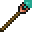

| Amber Staff |  |
| Amethyst Staff |  |
| Diamond Staff |  |
| Emerald Staff | |
| Lapis Lazuli Staff |  |
| Malachite Staff |  |
| Peridot Staff |  |
| Ruby Staff |  |
| Sapphire Staff |  |
| Tanzanite Staff |  |
| Topaz Staff |  |
| Terrestrial Staff Chromatic Wizards Only |  |
Chromatic spells are not a member of any particular class, and generally focus on simple spells.
Below is a list of Chromatic spells, click a spell's icon for more information about the spell.
|